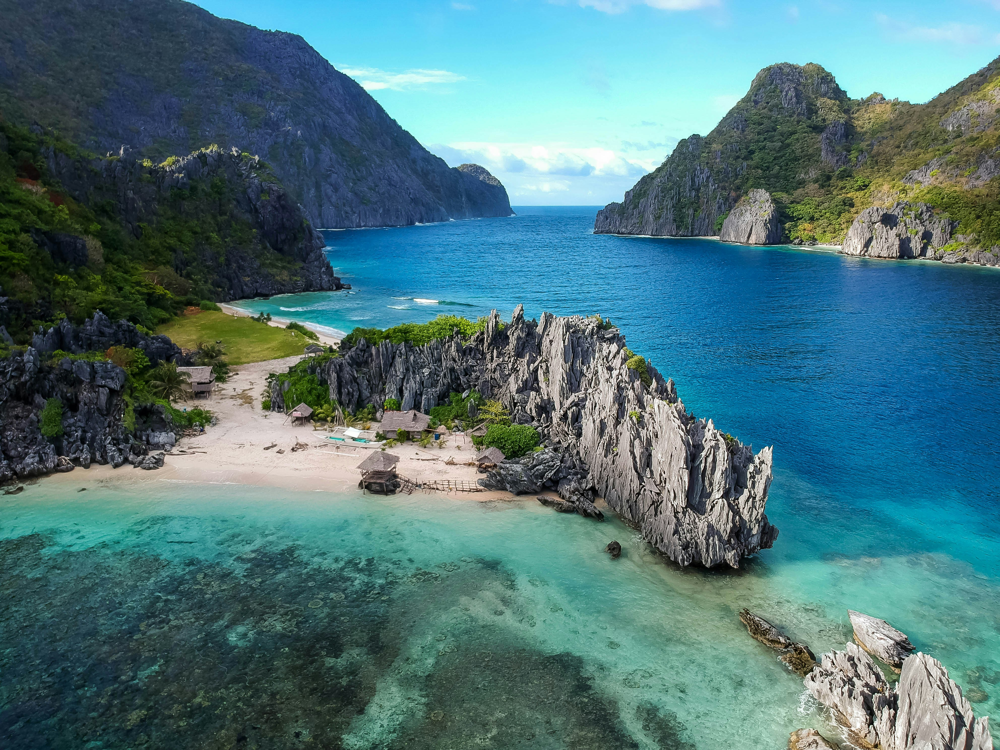

My recent trip to Fire Island was an unforgettable experience filled with breathtaking ocean views, peaceful nature trails, and stunning sunsets. Walking along the sandy beaches and exploring the coastal dunes made the trip truly special. The park’s natural beauty and wildlife created the perfect escape from the busy city, making it a must-visit destination for nature lovers.
Whether you're looking for a relaxing beach getaway or an adventurous nature escape, Fire Island has something for everyone. Start planning your trip today and experience the magic of this unique destination! Visit the official Fire Island National Seashore website for more information and travel tips.